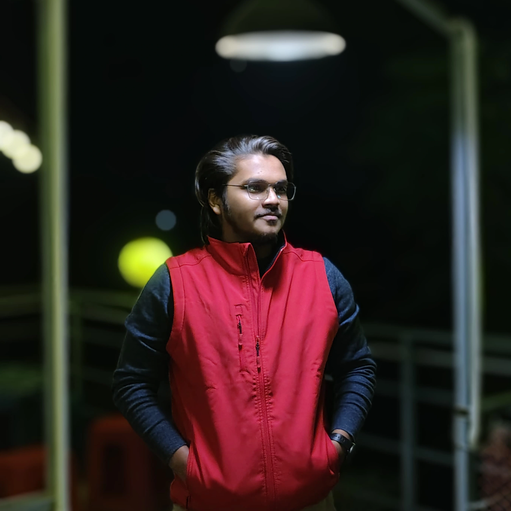

BACHELOR’S DEGREE
B.Sc. in Computer Science and Engineering
International University of Business Agriculture and Technology (IUBAT)
Uttara, DhakaABOUT BADHON
I’m Badhon Rozario, a Computer Science and Engineering graduate from IUBAT. My academic and personal projects gave me hands-on experience in web development, software, databases, and IT support.

Tongi, Gazipur · BangladeshMY APPROACH
I have explored full-stack web development with the MERN ecosystem, along with Firebase services and authentication. I’ve also worked with programming languages and tools across coursework, personal builds, and an academic practicum project.
My internship at The City Bank PLC. introduced me to day-to-day infrastructure support in a professional environment: helping employees, investigating technical issues, and getting familiar with the systems teams rely on. I’m interested in software development, UI/UX, and continuing to learn modern technologies.
EDUCATION
BACHELOR’S DEGREE
International University of Business Agriculture and Technology (IUBAT)
Uttara, DhakaHIGHER SECONDARY CERTIFICATE
Nawab Habibullah Model School & College
Uttara, DhakaSECONDARY SCHOOL CERTIFICATE
Shaheed Smrity High School
Tongi, GazipurOUTSIDE THE CODE
SAY HELLO